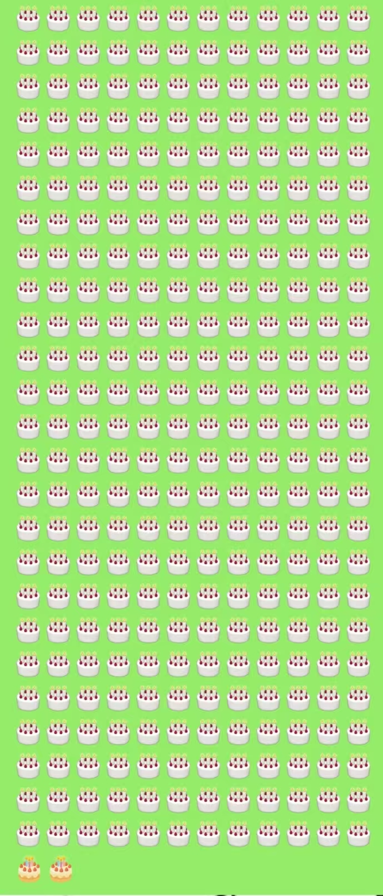

微信与emoji
时间经过:2026.01.02
震惊！计算机类大一学生发现国民级软件的bug！这个软件你一定也用过！
引言：😅🎂
一天，我弟弟给我发微信玩。它发了一堆emoji表情“😅”
我突然发现，在这一堆emoji表情中，前一部分是一个样式，后一部分是另一个样式。长的不一样
这让我想起，很久以前，我给别人发一堆emoji表情“🎂”，也有类似的现象
这勾起了我的好奇心（也勾走了我接下来的一个小时
{kind=link}
{kind=link}
我开始用手机在一次消息气泡中，调整数量，寻找边界
果不其然，我发现，存在着这样一个边界：在它之前是一个样式，在它之后是另一个样式
这个边界就是12*25 = 300

{kind=link}
我问deepseek这是为什么
经过漫长的叽里咕噜，deepseek说这可能是微信团队对于性能的平衡
我很高兴，开始把这个成果分享给别人，并问对方是否也能看到这个现象
我的高中同学说，能。
好啊！有力的验证！
我的舍友说，都一样啊。
好啊！不对，啥？都一样吗？

我开始思考。是因为他用的是电脑而不是手机吗？
我问，用手机试试呢？
他却说：就是手机啊。
啊，我猛然反应过来，他用的是苹果手机
难道不是微信的问题？是操作系统的问题？
我的高中同学说，“再多发点”
我去，好主意
这时候，本来打算睡午觉的我，一下子就精神了，爬下床打开了电脑（
我开始尝试复制粘贴很多很多的emoji
哎呀，微信卡死了……好像有点太多了
我又粘贴的慢了一些
我发现，电脑并没有这个bug。直到显示“你输入的文字过长，无法发送”，那些🎂还都是相同的样式


（另外我还有个意外发现。电脑微信单次最多输入4096个“蛋糕emoji🎂”。这数字乍一看咋有零有整的？哦，原来是2的12次幂啊。哈哈
我用的是安卓手机和windows电脑，所以实验到此就告一段落了。
该开始总结了
于是我又开始和deepseek进行交流
我想，大概是这样的：
微信的emoji用的是iOS的样式
或者说微信为了统一，事先在安装包中加了一段自己做的、iOS风格的emoji（deepseek的猜想）
而安卓手机上的微信，一出现emoji，就会渲染成这个iOS风格的emoji
又出于性能的考虑，安卓手机连续出现300个以上的emoji，就不再渲染，或者是渲染出错，总之是显示安卓本身的emoji样式
windows上则一律显示windows的样式
另外我还在之前收藏过的神秘小网站 Emoji List 找到了佐证
（这小网站谁研究的呢，真厉害
{kind=link}
{kind=link}
另外的另外，我另一个高中同学问我，鸿蒙呢？
他不是纯血鸿蒙，看到的现象和我是一样的。我打趣他说，你算安卓（
至于纯血鸿蒙，和macOS一样，缺少实验数据，按下不表（
就这样
致谢：高中同学、舍友、deepseek、我自己
参考文献：我自己用微信的经验与记忆
一些更新
其实这个也说不上是bug
当时我问了deepseek，说这有可能是腾讯在性能和效果之间的权衡
（我读了《提问的智慧》，突然觉得我当时就这么声称找到bug有点草率、有点愧疚，所以才来更新这么几句